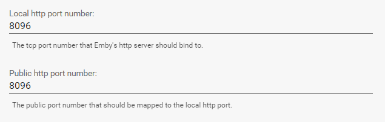
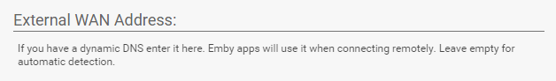
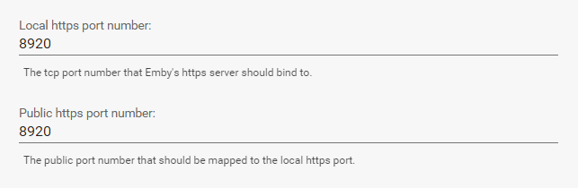
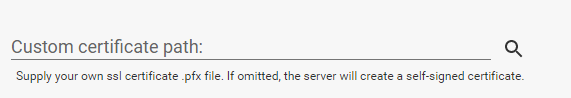
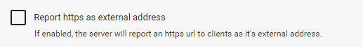

Netzwerkkonfiguration
Passen Sie die Netzwerkeinstellungen an, um den integrierten Webserver von Emby zu konfigurieren. Diese Einstellungen sind zugänglich, indem Sie das Server Dashboard öffnen und zu Server -> Netzwerk navigieren.
Für die Zwecke dieses Dokuments definieren wir lokal als innerhalb Ihres Heimnetzwerks und extern als außerhalb Ihres Netzwerks, weg von zu Hause.
Http-Ports
Die Http-Port-Einstellungen ermöglichen es Ihnen, sowohl den lokalen Systemport, an den der Server binden soll, als auch den externen Port festzulegen, den der Server beim Melden seiner externen URL an Clients verwenden soll.

Im Allgemeinen werden diese beiden Werte gleich sein, aber sie können nach Bedarf angepasst werden.
Externe WAN-Adresse
Der Server versucht, Ihre externe Adresse automatisch zu erkennen. Das Ergebnis wird auf der Hauptseite des Server Dashboards angezeigt.
Falls Sie diesen Wert aus irgendeinem Grund anpassen müssen oder er nicht richtig erkannt wird, können Sie Ihre externe Adresse manuell hier eingeben:

Die meisten Benutzer können dies leer lassen und sich auf die automatische Erkennung des Servers verlassen. Wenn Sie einen DDNS oder die Https-Funktion mit einem selbstsignierten Zertifikat verwenden, möchten Sie es vielleicht anpassen.
Https-Ports
Die lokalen und öffentlichen Https-Ports können ähnlich wie normale Http konfiguriert werden:

Zusätzlich können Sie auch Ihr eigenes benutzerdefiniertes SSL-Zertifikat bereitstellen. Dies wird für die Nutzung von https dringend empfohlen. Wenn es weggelassen wird, erstellt der Server ein selbstsigniertes Zertifikat.

Https erzwingen
Emby-Apps verwenden standardmäßig Http. Um sie zu zwingen, Https zu verwenden, können Sie den Server so konfigurieren, dass er seine standardmäßige externe URL als https-URL meldet.

Hinweis: Https ist eine neue Funktion. Einige Emby-Apps könnten Updates benötigen, bevor diese Option genutzt werden kann.
Automatisches Port-Mapping
Standardmäßig versucht der Server, öffentliche auf lokale Ports durch Konfiguration Ihres Routers automatisch abzubilden. Sie können dies bei Bedarf hier deaktivieren.